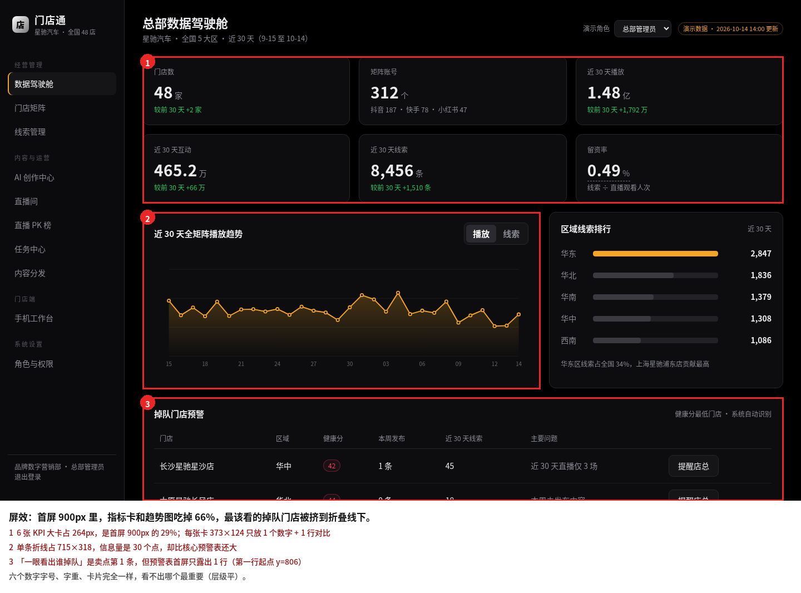
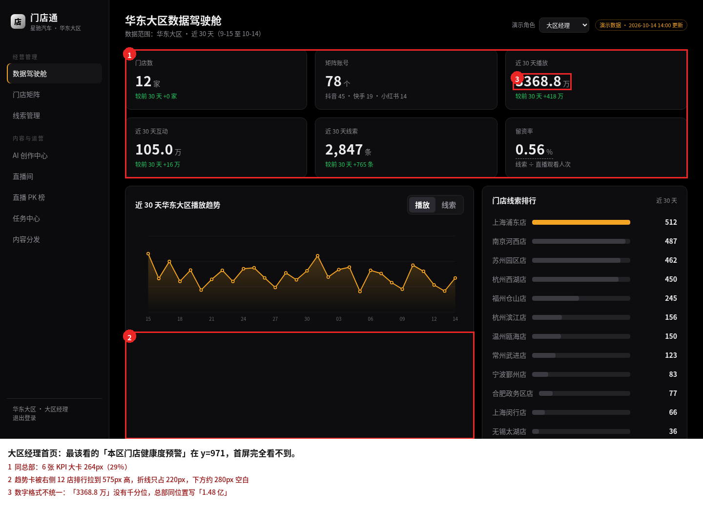
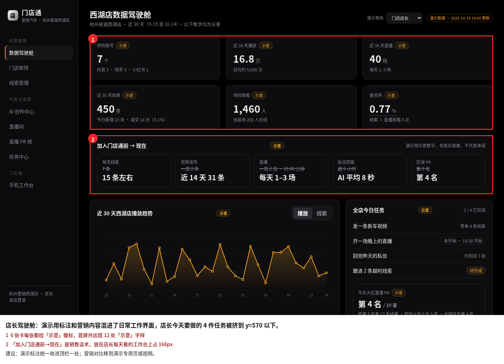
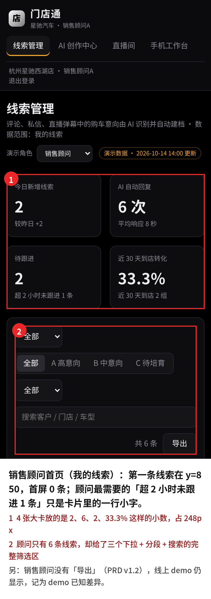
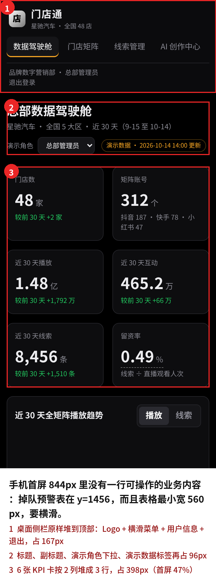
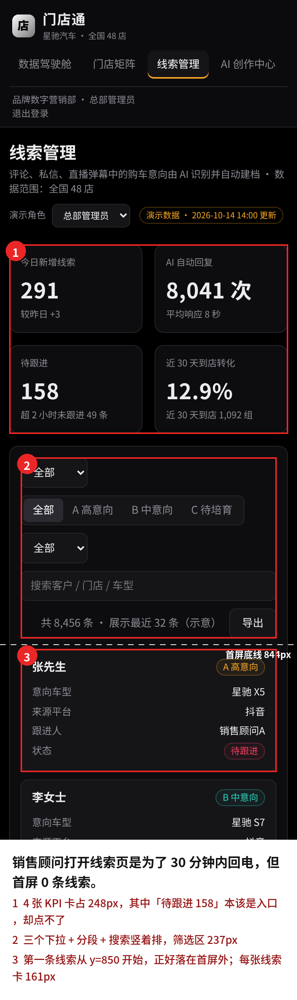
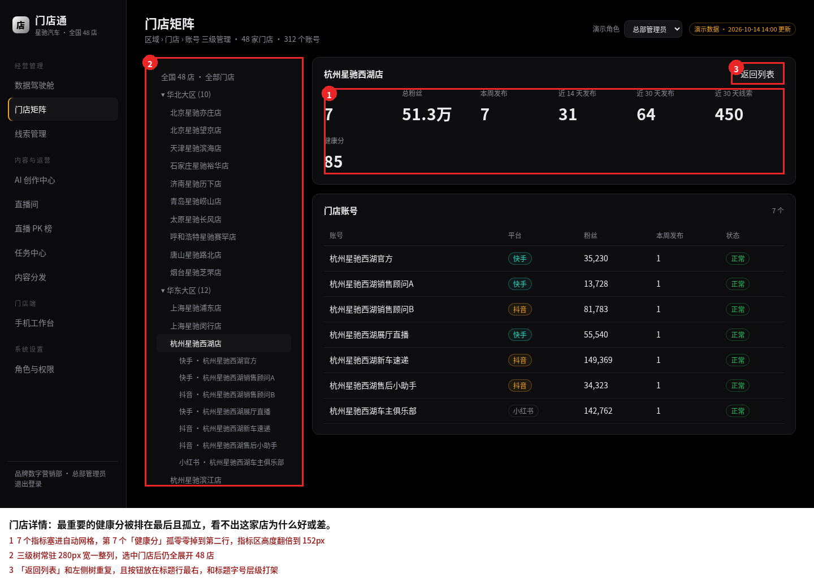
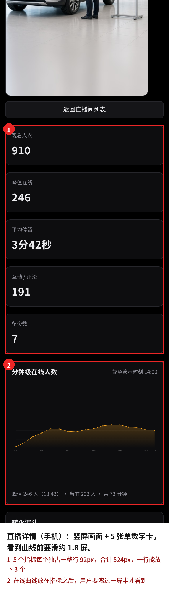
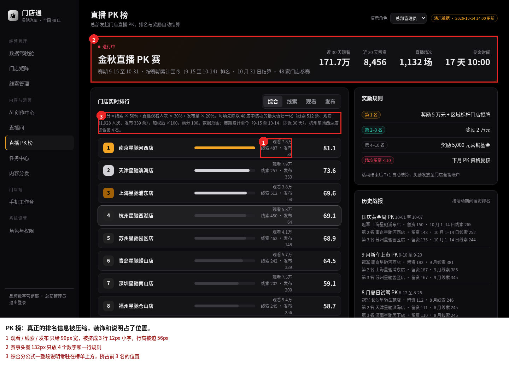

门店通设计规范 v0.1 初稿
讨论稿，2026-10-20。只是设计稿，没有改 demo 代码，也没有部署。主线是屏效：同样的屏幕放下更多有用的信息，把面积留给「谁掉队」「谁要回电」这类要动手的事。
依据
- 需求：PRD v0.1–v1.3（含 v1.1 补充、v1.2 闭环补充评审稿和 v1.3 修订稿）、决策记录（主色黑色、虚构品牌星驰汽车、演示数据口径）、闭环缺口清单、门店竞品调研，以及 10-20 评审对本稿问题的答复（已写进 PRD v1.3）。
- 行业和用户：汽车经销商新媒体矩阵营销。买单方是品牌总部和经销商集团（电脑前横向比 48 家门店）；使用方是店长、新媒体专员、销售顾问（展厅里用手机，线索要 30 分钟内跟进）。
- 看过的页面：线上 demo（mdt-demo，GitHub Pages）总部 / 大区 / 门店驾驶舱、门店矩阵和门店详情、线索列表和详情抽屉、AI 创作（含生成后）、直播间列表和详情、直播 PK、任务中心（总部 / 门店）、内容分发、手机工作台、角色与权限、销售顾问线索页，PC 1440×900 和手机 390×844 各一套，存在 shots/pc 和 shots/m（不含登录页）。四个角色的首页（总部、大区、店长驾驶舱，销售顾问线索页）都在下面审计里。
现状用法统计（读 demo 源码的样式和脚本）
| 项目 | 现状 | 本规范 |
|---|---|---|
| 字号 | 15 种（10–46px），12px 用了 60 次，11px 16 次 | 9 档，信息文字最小 12px |
| 间距值 | 28 种，含 9、13、22、26、46px | 8 档，4 的倍数 |
| 圆角 | 11 种（3–48px） | 4 档，按容器大小 |
| 颜色写死 | 62 个不同的十六进制颜色值，琥珀 #f5a524 出现 14 次，另有 5 种透明度变体 | 全部走变量 |
| 行内 style | 180 处 | 改造时收进组件类 |
| 字重 | 400、500、600、700、800、900 共 6 档 | 400、500、600 三档 |
关键设计决定
- 仪表盘法则：一屏一块主表从汽车仪表盘借来的：车速表最大，油量水温很小。每页最多一个 32px 大数字，其余写成 20px 指标条。驾驶舱指标区从 264px 降到 88px，首屏掉队门店从 1 行变成 14 行。
- 指标兼作筛选线索、发布记录、任务这类页面，「待跟进 158」「失败 1」直接做成筛选芯片，点了就筛。一排大卡省掉，手机工作台线索首屏从 0 条变成 7 条。
- 沿用黑色和琥珀，收窄用途遵守「主色黑色」，琥珀保留（视频里已出现）。改的是用法：琥珀只表示「需要你处理」，图表主线改白色；去掉青色，换成只管「进行中 / 链接 / 焦点」的信息蓝。面板靠三档灰分层，不加阴影。
- 手机只给工作台做专属布局按 10-20 评审结论（PRD v1.3 1.9）：手机工作台（#/mobile）用底部标签栏「我的任务」「线索」「消息」、顶栏 48px、三行列表（主语、AI 摘出的原话、来源归属）。其他页面在手机宽度下只要求不错位、能看能点：侧栏收进菜单按钮，指标条换行，表格在面板内横滑、首列固定。
- 演示标注只说一次「演示数据」从每张卡上的「示意」徽标（店长首屏 12 处）收成顶栏一处，满足 PRD「角落标注」的要求，又不干扰工作界面。「加入门店通前 → 现在」留在原位，标为演示专用模块（虚线描边 + 一处「演示专用，正式产品不含」）。
现状问题
红框是问题区域，数字由 Playwright 读取 demo 页面的 DOM 位置得出。


















改前和改后
挑了屏效问题最大的两个页面：总部驾驶舱（卖点第 1 条「一眼看出谁掉队」）和线索（卖点第 4 条「线索不漏一条」）。改后示意按新规范重排，数字取自线上 demo 的演示数据，不是新编的。手机列口径不同：驾驶舱手机是兼容写法（同一页面缩到 390 宽）；线索手机对比的是店长线索页 → 手机工作台「线索」标签页。
| 实测项 | 驾驶舱 PC | 驾驶舱 手机（兼容） | 线索 PC | 线索 手机（工作台） |
|---|---|---|---|---|
| 指标区高度 | 264 → 88px | 398 → 242px | 124 → 32px | 253 → 48px |
| 占视口高度 | 29.3% → 9.8% | 47.2% → 28.7% | 13.8% → 3.6% | 30% → 5.7% |
| 主功能区首屏面积 ÷ 内容区 | 19.6% → 50.5% | 0% → 56.6% | 69.4% → 80.9% | 0% → 87.8% |
| 首屏完整可见的主列表行数 | 1 → 14 | 0 → 8 | 8 → 18 | 0 → 7 |
内容区 = 视口减去导航。原始数据见 mockups/measure-before-after.json。


需要确认的问题
前 7 项 10-20 评审已答复并写进 PRD v1.3，标「已定」；第 9 项记录和 PRD v1.3 的对齐结果。
- 已定：按钮叫「提醒店长」。和角色名、消息文案统一；规范文案表和改后示意已改，自查表文案项改为通过。
- 已定：「去完成」按任务写去处：「去发视频」「去开直播」「去回私信」，已写进规范的按钮文案规则和文案表。
- 已定：手机范围：只有手机工作台（#/mobile）做手机专属布局，底部标签栏三项「我的任务」「线索」「消息」；其他页面在手机宽度下只要求不错位、能看能点。规范「跨端」一节已重写；驾驶舱、线索改后示意改为兼容写法；另出手机工作台「线索」标签页示意。
- 已定：「加入门店通前 → 现在」留在原位，标为「演示专用模块」，正式产品不做。规范新增「演示专用模块」一节：虚线描边、标题旁一个「演示专用模块」标签（PRD v1.3 1.10）。
- 已定：5 个补充状态文案按 PRD v1.3 定稿（消息中心空列表按角色写说明句、发布记录筛选无结果、脚本库没下发、转交时没有其他顾问、新建任务提交失败；手机脚本卡空态「没有待领取的脚本」），规范「空和失败状态」一节已照录。
- 已定：发布状态只保留待发布 / 已发布 / 失败。「发布中」「审核中」「已取消」等正式产品以后再定，规范里已注明。
- 已定：销售顾问没有导出，记为 demo 已知差异（线上 demo 销售顾问线索页仍显示「导出」）。
- 待确认：浅色「展厅白」：不在这次结论里，保留为备选，token 已备好。
- 已对齐：与 PRD v1.3 一致。分隔格式、消息类型（11 种标签，筛选项「催办」）、来源写法、今日任务说明的中文逗号、任务中心默认详情的标题分开放、「提醒店长」弹层按钮「取消」「发送提醒」，都已写进 PRD v1.3（第 42、44、45 条），规范没有待对齐的差异。
文件
- 规范：system/index.html，变量 system/tokens.css、system/tokens.json，组件样式 system/components.css，组件用在哪：system/usage.md
- 现状截图：shots/pc、shots/m（每页视口截图和整页截图）；现状标注：audit/
- 改后示意：mockups/dashboard.html、mockups/leads.html（同一文件，PC 布局，手机宽度兼容显示），mockups/mobile-leads.html（手机工作台「线索」标签页）；截图 mockups/after-*.png，对比图 mockups/compare-*.png
- 参照产品：见规范页「参照系」一节（文字说明 + 官方公开页链接）；自查表：selfcheck.md；自查截图：selfcheck-shots/